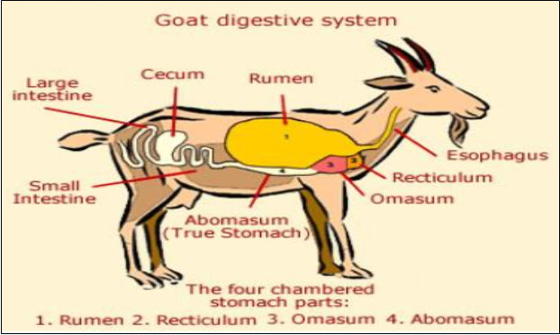

Agricultural Science
Ruminant Animals
Ruminants are herbivorous mammals with a four-chambered stomach, who digest otherwise indigestible plant matter by fermenting it in this complex stomach, and who chew the cud [they cough up balls of semi-digested plant matter and re-chew it to break down before swallowing it again]. They chew and regurgitate their food more than once, and digest multiple times in different stomachs. These animals are quadruped mammals with even toes, hooves and chew the cud. They generally have four stomachs with different characteristics, which are use at different stages in digestion; they include cattle, sheep, buffalo, antelopes, giraffe, goats and camels. They do not completely chew the grass or vegetation they eat. The partially chewed grass goes into the large rumen where it is stored and broken down into balls of “cud”. When the animals have eaten its fill it will rest and “chew its cud”. The cud is then swallowed once again where it will pass into the next three compartments, the reticulum, the omasum and the true stomach, the abomasums. 